Tugas Random Forest dan Classifier#
Analisis Prediksi “Play Tennis” Menggunakan Random Forest di KNIME#
Apa itu Random Forest?#
Random Forest adalah algoritma pembelajaran mesin (machine learning) yang termasuk dalam kategori Ensemble Learning. Pada Random Forest ini hanya mengandalkan satu pohon keputusan (Decision Tree), Random Forest membangun banyak pohon secara acak dan menggabungkan hasilnya (biasanya melalui voting untuk klasifikasi) untuk mendapatkan prediksi yang lebih akurat dan stabil.
Model Classifier#
Pada data Play Tennis klasifikasi yang digunakan ada pada atribut class/target yaitu Play Tennis yang nilainya berupa (yes atau no)
Implementasi Pada Knime#
Untuk mengetahui model classifier dan random forest, digunakan tools knime untuk perhitungannya.
Berikut workflow dari knime yang digunakan:
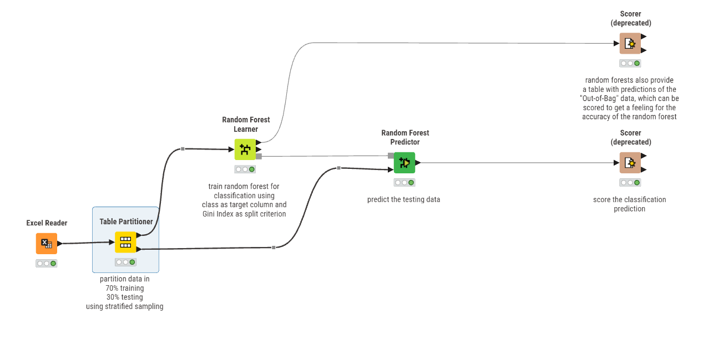
1. Excel Reader#
Pada nodes ini digunakan untuk mengimpor file dataset “Play Tennis” yang berisi 14 data. Node ini digunakan untuk membaca dataset yang berasal dari file Excel agar data dapat dimasukkan ke dalam KNIME. Setelah file berhasil dibaca, seluruh isi tabel akan tampil dan siap digunakan pada tahap selanjutnya. Pada tahap ini KNIME juga secara otomatis mengenali tipe data dari setiap kolom yang ada pada dataset.
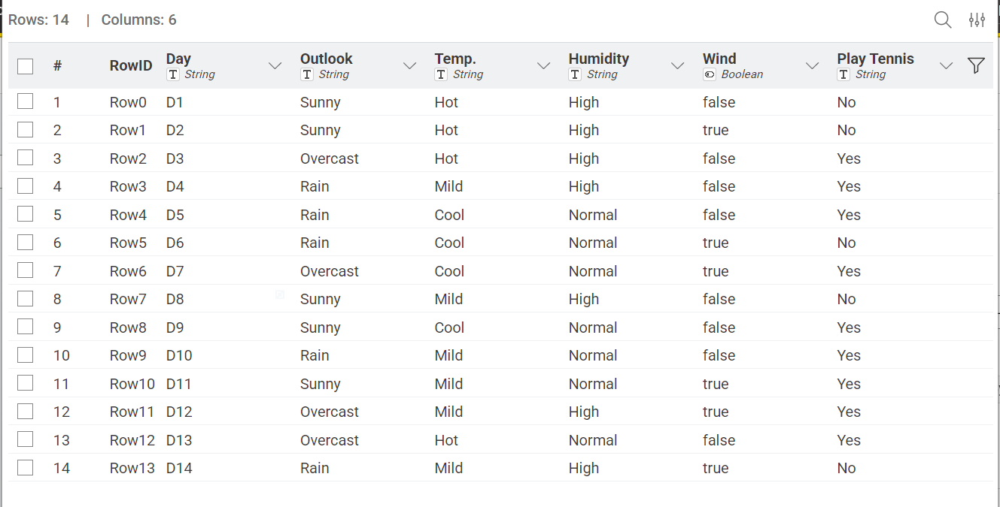
2. Tabel Partitioner#
Setelah data berhasil dibaca, proses dilanjutkan menggunakan node Table Partitioner. Node ini digunakan untuk membagi dataset menjadi dua bagian, yaitu data training dan data testing. Pada workflow tersebut digunakan pembagian sebesar 70% untuk data training dan 30% untuk data testing. Pembagian ini bertujuan agar model dapat belajar menggunakan sebagian data, kemudian diuji menggunakan data lain yang belum pernah dipelajari sebelumnya.
Data Training (70%):
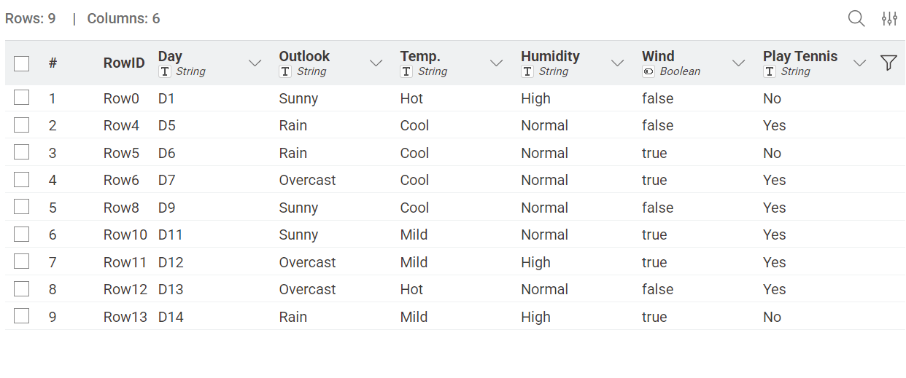
Data Testing (30%):
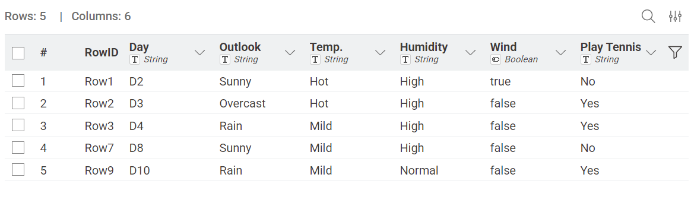
3. Random Forest Learner#
Tahap berikutnya menggunakan node Random Forest Learner. Node ini berfungsi untuk melatih model Random Forest menggunakan data training yang telah dipisahkan sebelumnya. Pada proses ini sistem akan membangun banyak pohon keputusan berdasarkan data training. Setiap pohon dibuat menggunakan kombinasi data dan atribut yang dipilih secara acak sehingga model menjadi lebih stabil. Pada workflow tersebut digunakan metode Information Gain Ratio sebagai dasar dalam menentukan pemisahan data pada setiap pohon keputusan. Hasil dari tahap ini adalah model Random Forest yang sudah siap digunakan untuk melakukan prediksi.
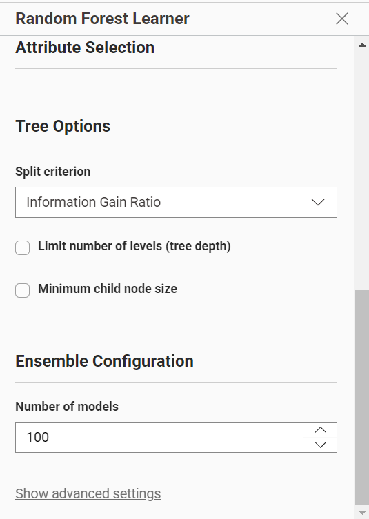
Random Forest Predictor#
Model yang telah dibuat kemudian digunakan pada node Random Forest Predictor. Node ini menerima dua input, yaitu model Random Forest dari proses training dan data testing dari Table Partitioner. Sistem kemudian melakukan prediksi terhadap data testing berdasarkan pola yang telah dipelajari sebelumnya. Hasil dari node ini berupa tabel yang berisi data asli beserta hasil prediksi yang dihasilkan oleh model Random Forest.
Scorer#
Tahap terakhir menggunakan node Scorer. Node ini digunakan untuk mengevaluasi performa model klasifikasi yang telah dibuat. Proses evaluasi dilakukan dengan membandingkan nilai asli (actual) dengan hasil prediksi (prediction) yang dihasilkan model. Dari proses tersebut diperoleh informasi seperti nilai accuracy, precision, recall, serta confusion matrix. Nilai accuracy menunjukkan seberapa baik model dalam melakukan klasifikasi terhadap data testing.
Pemilihan kolom Actual dan Prediction:
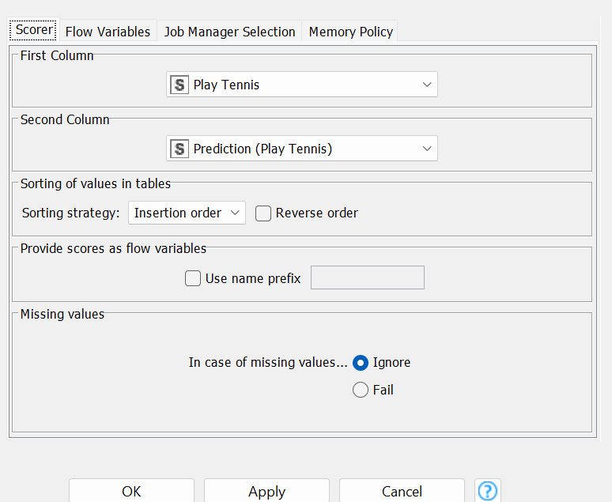
Confusion Matriks:
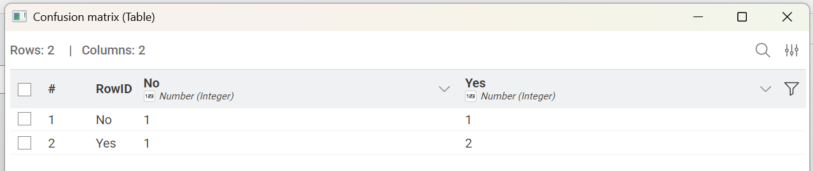
Accuracy yang didapatkan:
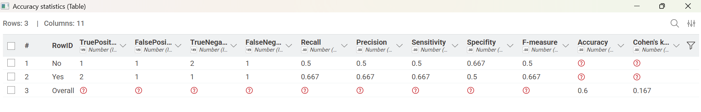
Scorer#
Selain digunakan untuk membentuk model klasifikasi, node Random Forest Learner juga menghasilkan data Out-of-Bag (OOB). Data tersebut kemudian dievaluasi menggunakan node Scorer yang terhubung langsung dari learner. Evaluasi ini digunakan untuk mengetahui performa awal model selama proses training tanpa menggunakan data testing. Namun, evaluasi utama tetap dilakukan pada hasil prediksi data testing menggunakan node Scorer setelah Random Forest Predictor.
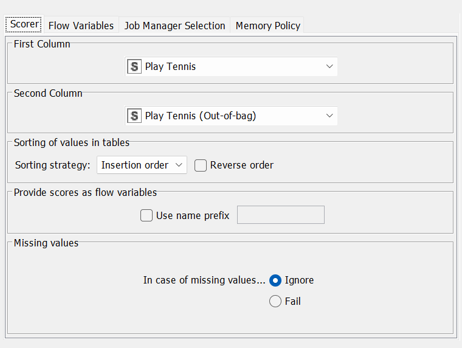
Confusion Matrik:
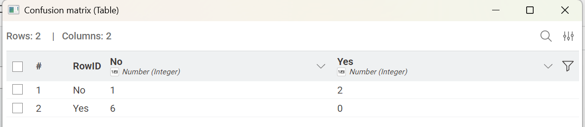
Accuracy yang didapatkan:
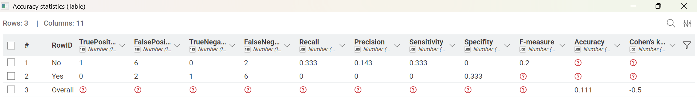